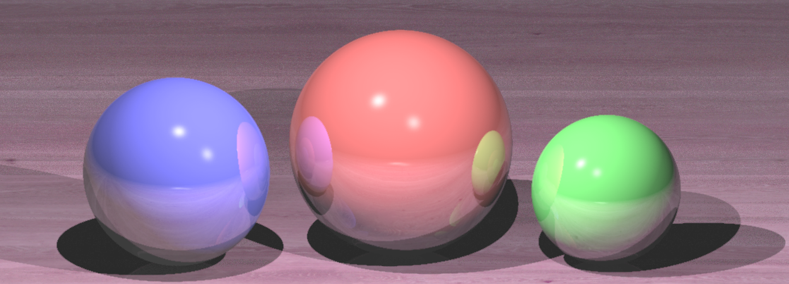
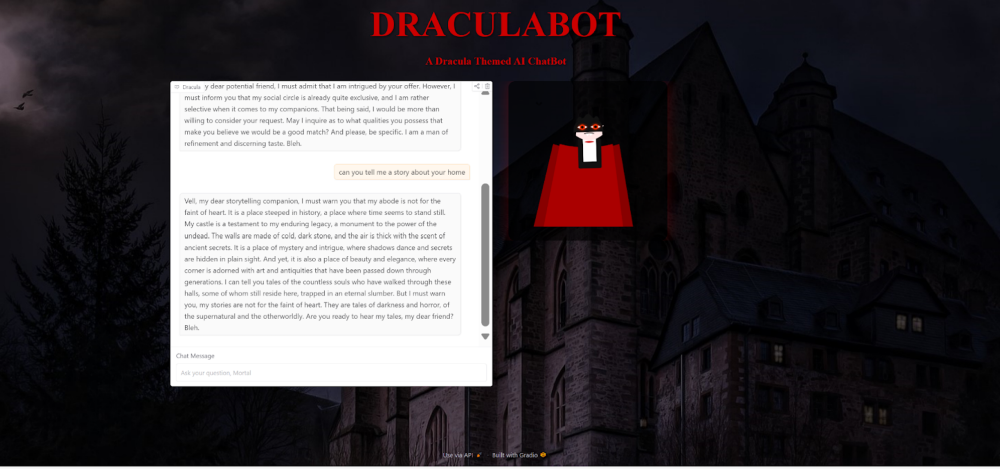

Hello, my name is Bridgette Castronovo and welcome to my portfolio! I’m a 3rd year Computational Media student at Georgia Institute of Technology with a passion for graphic design and game development. This webpage houses some of my recent technical and design projects and showcases my interest in creating digital experiences. Outside of the world of computer graphics, I enjoy reading, writing, and playing any and all Nintendo games! Dive into my portfolio to learn more about my work and interests!
Game Overview: Play as Twig, a young girl who stumbles upon an ancient wizard’s tower and finds herself trapped inside! To escape, she must successfully navigate out of the labyrinth of magical rooms designed by the old wizard who created the tower hundreds of years ago. To escape each room, Twig must avoid dangerous spells and traps, figure out how to progress through the room, learn to use her magic, and piece together the story of the ancient tower and the wizard who created it.
For my computer graphics project, I implemented a ray tracing algorithm to simulate realistic lighting effects, including shadows and reflections, on a scene featuring three colorful cylindrical balls. Each ball was assigned a vibrant hue—red, green, and blue—positioned strategically to demonstrate the interaction of light with their surfaces. The ray tracing technique calculated the intersection of light rays with the balls, enabling the rendering of accurate shadows cast onto a plane below them. Additionally, the reflective properties of the balls were modeled, creating visually compelling interplays of light as they reflected each other’s colors and the surrounding environment. This project highlighted the power of ray tracing in achieving photorealistic effects and deepened my understanding of concepts like light behavior, reflection vectors, and shadow mapping.
The goal of this poject was to speculate that artificial intelligence will contribute to the development of “smart mirrors” which utilize generative artificial intelligence to alter the clothing of a person’s reflection. These mirrors are programmed in sync with major cultural holidays across the globe so that when a person stands in front of the mirror, they can choose to see their reflection in corresponding traditional attire respective to that holiday. For example, if a female user were to look in the mirror on the Hindu holiday of Diwali, then she would see herself dressed in a traditional Indian Sari. The major technical implementation for this project was completed in A-Frame so that we could create a virtual scenario showing how a user could step in front of a smart mirror and see their reflection change into traditional clothing. The user is also provided with the opportunity to interact with a chatbot which is representative of the smart mirror's ability to interact with a user and provide conversation related to the clothing and its relation to the cultural significance of the holiday.
For this assignment, we created DraculaBot, an interactive AI character portraying the legendary vampire, hosted on Hugging Face. Its purpose is to provide users with a fun and immersive experience where they can interact with a character based on a vampire, Dracula. The bot personifies Dracula's dark and mysterious nature, engaging users with responses that reflect his portrayal as a sophisticated man with a thirst for blood. This project uses AI to bring a fictional character to life in a way that allows users to interact with Dracula in real-time. We programmed the bot to follow strict guidelines, ensuring consistency in Dracula's portrayal, adding depth, and maintaining the gothic atmosphere associated with the character.
Email: bcastronovo3@gatech.edu